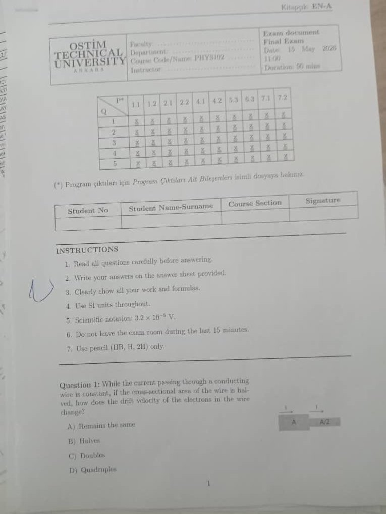

Question 1Topic 6 · Current & Resistance
The current through a conducting wire is kept constant. If the wire's cross-sectional area is halved, how does the drift velocity of the electrons change?
Same current squeezed through half the opening.
💡 What's really going on
The same number of electrons must pass each second, but now through a smaller doorway — so each electron has to move faster.
- Remains the same
- Halves
- Doubles
- Quadruples
Step 1 — the link
Current is $I=nqA v_\text{d}$, where $n$ (electron density) and $q$ are fixed for copper.
Step 2 — hold I constant
So $A\,v_\text{d}=\text{constant}$. They trade off inversely.
Step 3 — halve the area
Answer — CThe drift velocity doubles.
$A\to\tfrac12 A \Rightarrow v_\text{d}\to 2v_\text{d}$.
Why: in $I=nqAv_\text{d}$ with $I$ fixed, area and drift speed are inversely proportional.
View original exam photo (Q1)
Cover page + Question 1.
